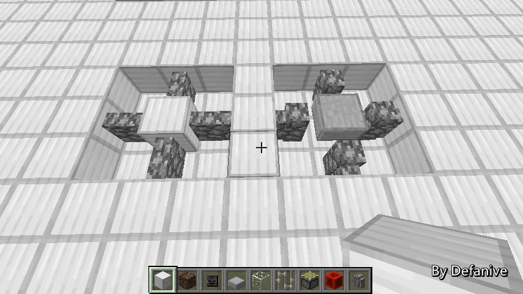
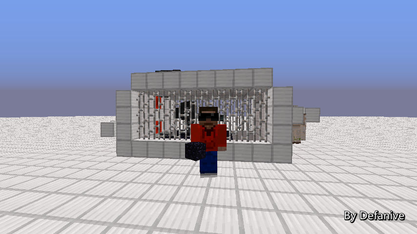
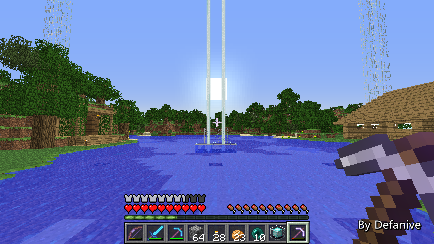

首页
上一页
271
272
273
274
275
276
276
277
278
279
280
281
下一页
末页
defanive2
无尽黑夜
14
而要对凋零产生一个伤害有很多种方法
Panda4994选择了使用雪球攻击
而我则使用了窒息伤害
由于凋零会持续回血，因此两种伤害方式对凋零没有什么区别
但是对于机器的设计来说，Panda的设计需要消耗雪球
而使用窒息伤害则没有使用限制
——来自 MCLive
23051楼
2013-10-01 12:41
defanive2
无尽黑夜
14
电路的运行原理非常简单
把活塞下推之后，活塞再伸出即可
同时，不能让凋零连续受2次窒息伤害
否则会发射蓝色骷髅头
因此窒息之后要尽快收回
PS 而且如果不尽快收回的话方块和活塞会被吃掉
——来自 MCLive
23052楼
2013-10-01 12:43
defanive2
无尽黑夜
14
Panda4994在一个星期之前也做了同样的刷黑曜石的装置
我们两个的设计大体肯定是很相似的
但是他的设计在运行了几个小时之后凋零位移逃离了
我大概实验总结了一下
问题出在他的收集装置上
——来自 MCLive
23055楼
2013-10-01 12:55
defanive2
无尽黑夜
14
在他的设计里凋零脚下的方块是一个半砖
这导致了两边的栏杆没有连接到半砖上
也就让凋零有了细微的活动空间，进入了栏杆的方块中
——来自 MCLive

23058楼
2013-10-01 12:57
defanive2
无尽黑夜
14
而他的收集系统中又使用了水流
因此凋零被不断的往栏杆冲刷
栏杆并不是一个实体方块
当游戏卡的时候（经常发生在吃东西的时候）
凋零就有可能进入到栏杆的hitbox中
从而继续被水流冲刷而逃脱
PS 我第一次设计用了Panda类似的水流系统
结果运行20分钟之后凋零逃脱了
——来自 MCLive
23059楼
2013-10-01 12:59
defanive2
无尽黑夜
14
但是没有水流系统的话掉落的物品要怎么收集呢
正下方是肯定放不了漏斗了，因为要放栏杆和脚下的实体方块
于是收集成了一个大问题
——来自 MCLive
23060楼
2013-10-01 13:00
defanive2
无尽黑夜
14
我的解决方法是在方块中插入漏斗矿车
建造方法是先放好漏斗矿车
然后再用活塞把方块推进去
这样的话即有栏杆可以困住凋零
同时也可以收集物品
——来自 MCLive
23063楼
2013-10-01 13:05
defanive2
无尽黑夜
14
使用窒息伤害的另外一个设计问题就是计时
活塞在进行伤害的时候是处于END的5x5x4的出生点中
如果此时有物品通过了传送门
那么活塞和附着的方块就会被删掉
因此要精确的校准活塞推出的时间和遗迹的发射器时间
——来自 MCLive
23065楼
2013-10-01 13:07
defanive2
无尽黑夜
14
离开遗迹之后遗迹的电路延时就不得而知了
要做到完美同步，我的方法是在出生点的边界设置要一个BUD
当物品通过时，就会触发BUD
这样就能够精确的校准窒息活塞电路和发射器电路的延时了
——来自 MCLive
23067楼
2013-10-01 13:10
defanive2
无尽黑夜
14
因此整个机器的设计就是这样了
运作流程：
第一步，在遗迹设置好发射器电路
在启动前会有一定时间的延时
用任何一种active chunk loader保证遗迹的chunk被加载
离开遗迹，进入END
——来自 MCLive
23069楼
2013-10-01 13:12
defanive2
无尽黑夜
14
第二步，到END之后开启和平模式电路开关
并且把自己垫高128格删除所有现有的小黑
把凋零中心的黑曜石挖掉
PS 和平+删除小黑目的是防止瞬移到机器内
这样凋零就会改变目标了
PS PS 看似几率很小
但是长期运行6个小时以上，几乎必定会发生
——来自 MCLive
23071楼
2013-10-01 13:14
defanive2
无尽黑夜
14
第三步，召唤凋零
并且在凋零头上的方块倒水
这样可以避免凋零的爆炸破坏我们的电路
倒水之后以最快的速度逃离这个地方
只要我们的距离大于凋零到任何一个铁傀儡的距离即可
——来自 MCLive
23072楼
2013-10-01 13:16
defanive2
无尽黑夜
14
第四步，爆炸后回来收回水源
第五步，把活塞前的黑曜石挖掉
第六步，启动BUD
——来自 MCLive
23073楼
2013-10-01 13:17
defanive2
无尽黑夜
14
第七步，往END传送门扔一个物品
重新激发主世界遗迹的chunk
在延时电路结束之后就会进行发射物品，刷新黑曜石平台
刷新黑曜石平台的同时就会激发BUD
BUD会开启活塞窒息凋零的循环电路
整个机器就会开始刷黑曜石了
——来自 MCLive
23074楼
2013-10-01 13:20
defanive2
无尽黑夜
14
第八步，把整个装置密封起来
用任何一种可以阻挡视线并且抗爆大于20的材料密封即可
两侧的头每过几分钟就会进行旋转重新寻找目标
如果这个时候看到你那么就悲剧了
所以说密封是很必要的
——来自 MCLive
23076楼
2013-10-01 13:23
defanive2
无尽黑夜
14
接下来就坐等凋零吃黑曜石的收成吧！
由于伤害凋零的最高频率只能达到2秒一次
因此刷黑曜石的速度就是1秒4.5个
PS Panda的视频里说是1秒9个
估计是他把脉冲半周期（1s）想成全周期（2s）了
PS PS 当然我也有可能是错的
不过我测试很多次的结果都是不能超过2秒一次
——来自 MCLive
23079楼
2013-10-01 13:26
defanive2
无尽黑夜
14
上次直播里也说了，这个机器只能一次性使用
因此不能在使用过程中退出游戏或者回主世界
在使用完之后的最后一步自然是和凋零大战了
此时凋零是锁定在两个铁傀儡身上的
因此我们有很长的准备时间
可以彻底准备好了再和凋零大战
战得好的话基本不会产生很大的破坏
——来自 MCLive
23082楼
2013-10-01 13:29
defanive2
无尽黑夜
14
今天的直播就到这里了！
下一次直播之前会把END清理干净，重新装潢好
整个黑曜石工程就高一段落了
25箱半的黑曜石，成绩非常出色！
PS 这个机器的确是个非常大的挑战
凋零一旦失控产生的破坏是非常大的
不过成功完成实在是非常的欣慰
PS PS 没有给出具体的电路和装置布置
不过如果只是照着图做的话，失败率是非常高的
想做的同学建议自己开几个创造世界认真思考设计
只有理解了机器才能最大程度的避免可能发生的事情
我在生存做之前进行了很久的测试还有演习
最终才能有稳定运行的结果
——来自 MCLive

23083楼
2013-10-01 13:33
defanive2
无尽黑夜
14
晚上时候研究了一会的红石，做了一个瞬间方块交换器
http://tieba.baidu.com/p/2628853534
利用无延迟电路的原理强迫活塞瞬间完成推动过程
23147楼
2013-10-03 13:59
defanive2
无尽黑夜
14
又到了一个周末了！
我们继续来MC吧！
——来自 MCLive
23206楼
2013-10-05 12:58
defanive2
无尽黑夜
14
上一次刷完黑曜石后整理了一下，一共25箱半
今天上来做简单修整的时候发现漏斗里面的黑曜石都没放进去
把漏斗里面的黑曜石都放完之后
加起来一共是约26箱半的黑曜石
总共为91474个，正确的产率是8.82个黑曜石/物品
PS 我就觉得损失1箱半是不是太大了
现在发现只是损失了半箱，表示很开心
——来自 MCLive
23208楼
2013-10-05 13:07
defanive2
无尽黑夜
14
END只做了一些简单的清理
具体的重建还没有开始做 = =
不过这个工程完工之后，就可以正式开始END岛的改造了
铺草地什么的一旦有时间就会开始做
PS 不过目测还得等挺久的
有一些工程更加迫切需要完工
——来自 MCLive
23211楼
2013-10-05 13:09
defanive2
无尽黑夜
14
带上18组黑曜石和回收的一些材料
准备回家
PS 还附魔了一套新铁装，2把铁剑，一个钻石斧
顺便修理了一下稿子
——来自 MCLive
23220楼
2013-10-05 13:15
defanive2
无尽黑夜
14
杀死了凋零之后又得到了一个nether star了
回到家之后的第一件事肯定就是造一个信标啦！
——来自 MCLive
23225楼
2013-10-05 13:25
defanive2
无尽黑夜
14
如果大家还记得的话，家里的信标塔一直都缺了一个信标
其实我的确是有3个信标的
只不过其中一个经常被我随便带走
用作提供挖掘速度II，提高工程进度
所以说这里常年缺少一个
今天就可以把它补上了！
——来自 MCLive

23228楼
2013-10-05 13:26
defanive2
无尽黑夜
14
效果准备设置成持续回血I+力量I
——来自 MCLive
23231楼
2013-10-05 13:30
defanive2
无尽黑夜
14
Mission Completed！
——来自 MCLive
23232楼
2013-10-05 13:31
defanive2
无尽黑夜
14
4个属性感觉真不错
——来自 MCLive
23233楼
2013-10-05 13:31
defanive2
无尽黑夜
14
好了，杂事完成了，来进入今天的主题吧
如果大家还记得的话，刷怪塔的第四个模式一直没有完成
那么我们今天就开始做这第四个模式吧！
——来自 MCLive
23235楼
2013-10-05 13:36
defanive2
无尽黑夜
14
第四个模式，就是 生存者模式
所谓生存者模式，就是类似杀怪训练场一样
在这个模式下，所有刷出的怪物都会被满血送到训练场地
玩家就可以在训练场地里面训练自己的生存技能
PS 不知道有没有人猜对？
之前直播完的时候翻了一遍回复，貌似没有猜对的
当然也有可能是我看漏了
——来自 MCLive
23236楼
2013-10-05 13:41
首页
上一页
271
272
273
274
275
276
276
277
278
279
280
281
下一页
末页